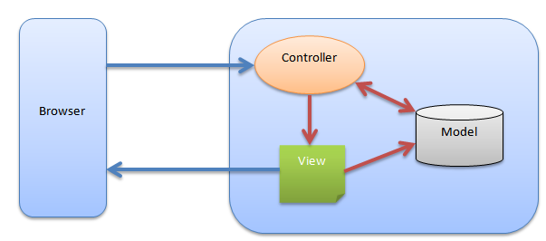

Modelo vista controlador
Idea general
El modelo–vista–controlador (MVC) es un patrón de arquitectura de software que separa los datos y la lógica de negocio de una aplicación de la interfaz de usuario y el módulo encargado de gestionar los eventos y las comunicaciones.
Para ello MVC propone la construcción de tres componentes distintos que son el modelo, la vista y el controlador.
El modelo es el responsable de recoger los datos de la apliación. De su almacenamiento y lectura, por tanto es el elemento que se conecta con ficheros o bases de datos.
La vista se ocupa de generar el interfaz de usuario. En nuestro caso de generar el HTML de la apliación web, o como veremos el XML o JSON.
Para acabar, el controlador es el elemento que recoge las peticiones del navegador y decide qué elementos del modelo deben ser invocados y que vista se debe generar en cada caso.
En nuestro proyecto esto se refleja con la creación de una carpeta con cada uno de estos nombres, en inglés models, views, controllers.
